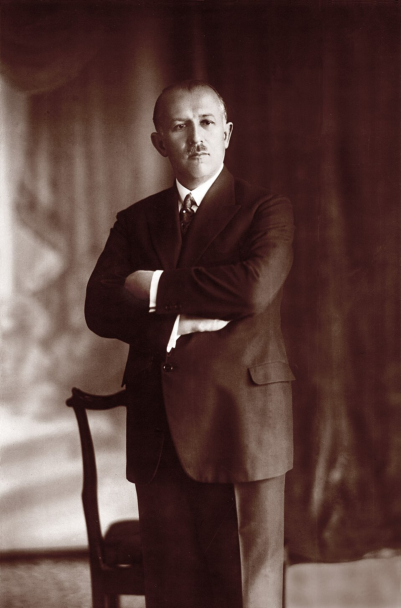
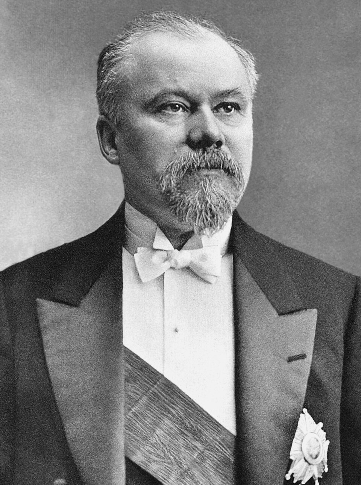
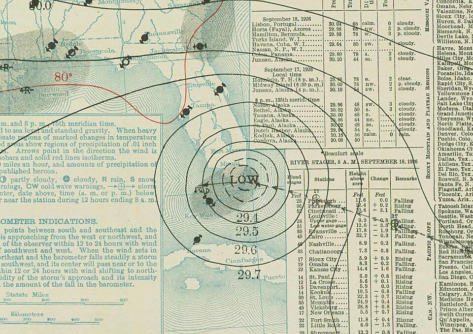

Geschichte im Spiegel der zeitgenössischen Berichterstattung — Täglich neu erzählt
Die historische Presseschau
Samstag, 25. September 1926
7 Artikel aus 13 Originalquellen · 6 Länder · 5 Sprachen
Einstimmige Annahme der Abrüstungsresolution — Staatssekretär von Schubert fordert Beseitigung der Rüstungsungleichheit — Schwerer chinesischer Vorstoß gegen England in der Vollversammlung

Das vierte Quartalsbudget verabschiedet — Misstrauensvotum gegen zwei Minister — Gesamtdemission des Kabinetts Bartel

Protestversammlung im Palais d'Orsay — Poincaré verweigert Empfang der Delegation — Veraltete Verwaltung soll weichen

Aufräumarbeiten in Florida laufen an — Gewaltige Sachschäden und drohende Seuchengefahr — Hilfsaktionen im ganzen Land
Geheimnis der Nordpol-Expedition von 1909 gelüftet — Eskimo gesteht Erschießung von Professor Ross G. Marvin — Konflikt im arktischen Eis
Britisches Kabinett lehnt Vorschläge der Bergarbeiter ab — Stillstand befeuert europäische Kohlenkrise
Dramatische Unterschiede nach Konfessionen — Sejm spricht Unterrichtsminister das Misstrauen aus